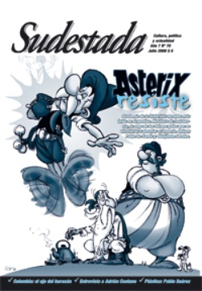

Buscar
"No hay cine independiente de verdad"
Alejado de la movida mediática pero agazapado a la espera de sorprender con una nueva película, el cineasta uruguayo Adrián Caetano recibió a Sudestada en su casa, mientras trabaja en una producción que tiene al terror como eje. Más cerca de lo popular que del cine intelectual, Caetano habla sin reticencias y opina sobre el presente del séptimo arte en Argentina.
Edición N° 70
Julio 2008
Revista bimensual
Comprar edición impresaSumario
- Asterix, metáfora de la resistencia
- El basurero de la historia
- Colombia: Mentiras y verdades del Señor Matanza
- "No hay cine independiente de verdad"
- Liborio Noval: Postales de La Habana
- Pablo Suárez: retazos de realidad
Compartir Articulo
Mientras el gato se pasea de un lado a otro por el patio trasero de su casa, Adrián Caetano trabaja en lo que será su nueva película. Del otro lado de la puerta del quincho, están a la espera de seguir editando. Pese a la urgencia, se toma su tiempo para responder algunas preguntas sobre el presente del género y repasa su carrera. En 1997, con Pizza, birra, faso su nombre empezó a sonar en el imaginario popular y se integró en el denominado "nuevo cine argentino". Con Bolivia, cuatro años más tarde, logró mantener la popularidad, pese a los problemas para estrenarla y con Crónica de una fuga dio el salto a las grandes vitrinas del cine mundial. Hoy, la crítica reconoce su talento y todo es futuro en el cine de Caetano. Las ganas de seguir filmando y la lucha contra el tiempo son parte de su presente.
-¿Cómo arranca tu vínculo con el mundo del cine?
-Como espectador, básicamente. Después, por un montón
de sucesos que me fueron pasando, terminé filmando y haciendo películas. Pero la relación que más valoro con el cine es la del lugar del espectador. Después ya ni me acuerdo de los avatares que me tocaron vivir y me llevaron a hacer cine. Desde pibe me interesó ese lugar, pero no pensaba que iba a terminar dirigiendo una peli o filmando, o que eso que tanto me gustaba iba a terminar siendo mi profesión o mi sustento, pero la relación nació así. Yo soy un espectador muy hábil en ese sentido porque me quedaron muchas marcas e imágenes del cine que vi, situaciones y películas que las tengo presentes en mi cabeza. Después, lo demás, fue como meterse desde afuera, pero me costó mucho tiempo entender que me iba tiempo completo a filmar. Y cuando lo decidí, empecé a tener menos laburo que antes.
-¿En qué momento fue eso?
-No hace mucho. Calculo que fue cuando hice los programas en televisión. Cuando empecé a hacer Tumberos empecé a vivir de esto, antes hacía comerciales o películas cada dos o tres años. Pero, concretamente, con la tele dije: "no hago otra cosa y empiezo a escribir guiones o películas". Antes hacía otras changas, pero como director y guionista, solamente desde la tele, que fue un espaldarazo grande para utilizar un espacio de popularidad que hay que ocupar y está bueno. Ahí también apareció el éxito, porque en este país parece que está más valorado el éxito en la televisión que en otros ámbitos o medios de expresión. Haciendo televisión, gané buena guita y me permitió tener más laburo, trabajar más en publicidad, tener otra consideración, no ser tan ignorado por la crítica que me tenía encasillado solamente como un director de cine independiente. A partir de ahí, se da el salto.
-Ahí es cuando lográs el éxito masivo, ¿qué significó eso en tu vida?
-No sé, el éxito -para mí- es que las cosas que hago salgan bien. El éxito que tiene que ver con un producto en la televisión es distinto y más nocivo: tiene que tener rating, mucha gente que te vea, el programa tiene que vender y hacer plata. Eso es el éxito para la tele. Después, todos los éxitos son relativos. Los éxitos que uno tiene los valora desde otro lugar. La satisfacción tiene que ver con lo que uno apuesta y gana de su siembra. Sé que si me hubiera dedicado o acomodado de otra manera, podría haber tenido un éxito más estándar; pero no me interesó ir por ese lado, sinceramente me aburre. No me gusta pasear por los festivales o hacer relaciones públicas. Prefiero abocarme a la parte creativa, por ahí va mi éxito. De la tele me llegaron muchas propuestas, pero no me cerraban algunas y no tenía la libertad de hacer lo que quería. En ese momento, sentí que todos querían treparse al éxito a partir de un lugar que había ganado y no me gustaba. Por eso, decidí no aceptar algunas propuestas como hacer una miniserie en un formato que no me gusta. Además acá se hacen copias baratas de lo que otros pensaron, no hay ideas propias ni originales. Se compran formatos como Mujeres asesinas o pelotudeces como Sex and the city, y desde ese lugar no me interesa ejercer mi profesión y ser un "ponchador" de cámaras donde la idea ya viene masticada.
-En el proceso de creación, ¿hay también un aporte colectivo?
-Sí, existe. En general nadie hace todo sólo. El problema es que, a veces, mucha gente prefiere mantener su lugar de empleado o sólo tiene actitudes para eso. Otros se encargan de poner en primer plano lo que les pertenece y después se refugian en lo colectivo. Entonces es muy difícil que se dé el proceso a gran escala. La intención primera es buena, pero después están las demandas comparativas en cuanto a quién pone más plata, quién llega más temprano a trabajar. Es muy difícil encontrar gente que sepa trabajar en grupo, el ego termina prevaleciendo. Tiene que ver con el sistema sociopolítico donde uno vive también, donde el éxito tiene que significar lo mismo para vos que para mí o para un pibe de Belgrano. Te dicen que tener éxito es levantarte una piba que esté buena, vestirse bien, consumir. Es perverso poner un estándar de éxito igual para todos cuando las relaciones de poder se encargan de hacer su trabajo. Ahí es donde empieza una carrera muy sanguinaria. Cuidar lo de uno, estar encerrado y salir para consumir...
(La nota completa en la edición gráfica de Sudestada Nº70 - Julio 2008)
Comentarios
Ignacio Portela
Articulos más vistos


LIBRERÍA SUDESTADA

Colección infantil

Distribuidora de Libros

Suscripción

Sudestada en URUGUAY

Otros articulos de esta edición
 Plástica
Plástica
Pablo Suárez: retazos de realidad
A lo largo de su carrera como pintor y escultor, Pablo Suárez se caracterizó por establecer un fuerte e inseparable ...
 Nota de tapa
Nota de tapa
Asterix, metáfora de la resistencia
"Estamos en el año 50 antes de Cristo. Toda la Galia está ocupada por los romanos... ¿Toda? ¡No! Una aldea ...
Colombia: Mentiras y verdades del Señor Matanza
Punto estratégico para los intereses de Estados Unidos en la región, Colombia hoy emerge de una realidad violenta. Un presidente ...
El basurero de la historia
Nada peor que caer en una encerrona y no darse cuenta hasta que es demasiado tarde. Nada peor, tampoco, que ...
Liborio Noval: Postales de La Habana
Por el lente de su cámara pasaron los acontecimientos más importantes de la historia de Cuba. Liborio Noval, de profesión ...